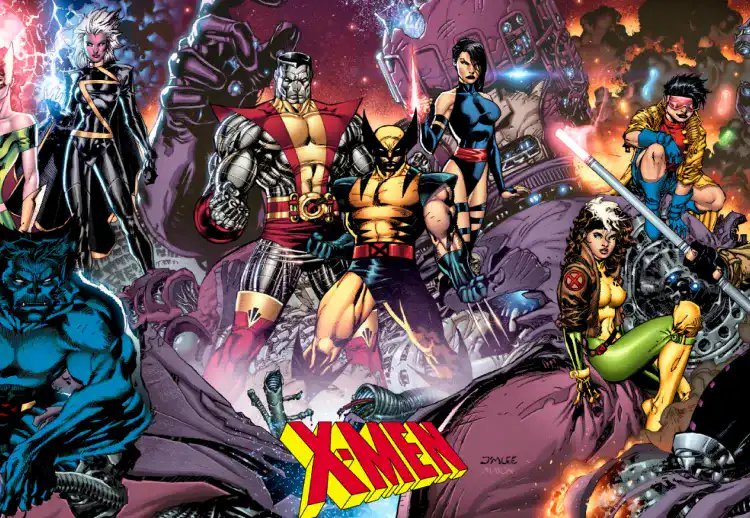
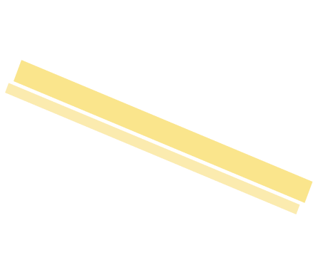
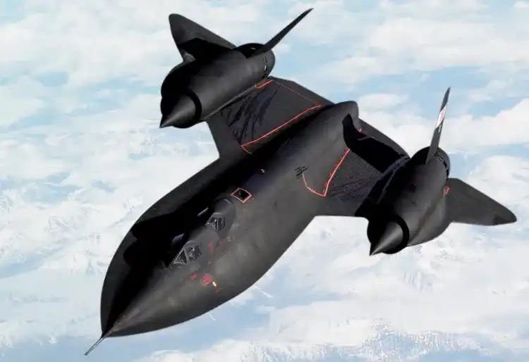
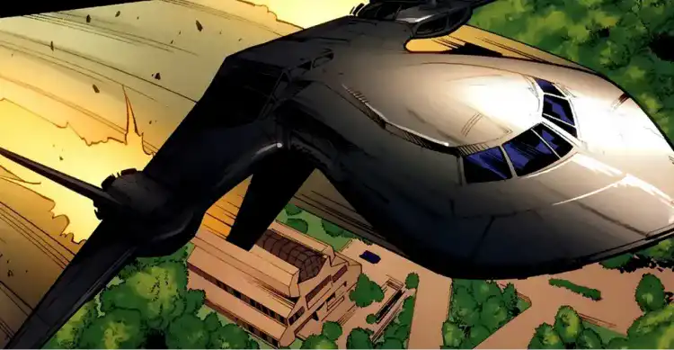

Accueil > Blackbird
Inspiré du Lockheed SR-71, le Blackbird n’est pas le véhicule le plus éco-responsable pour nos amis les super-héros.
Les X-Men sont une équipe bien connue de super- héros, issus de l’univers fictif Marvel. Ils sont créés par Stan Lee (scénariste à l’origine de plusieurs autres héros comme Spider-Man, Hulk ou encore les Avengers) et Jack Kirby pour les dessins. Leur première apparition date de septembre 1963, dans le comic éponyme.
Les membres des X-Men sont généralement des mutants humanoïdes. Dirigés par le Professeur Xavier, un autre mutant aux pouvoirs télépathiques, les X-Men se battent contre Magnéto, un mutant pouvant se servir des champs magnétiques. Les X-Men doivent souvent se déplacer aux quatre coins du monde pour mener de nombreuses opérations et missions. Pour cela, ces héros se servent du Blackbird, également appelé X-Jet. Ils utiliseront cet avion pour sa vitesse légendaire et sa discrétion. Il s’agit là d’un avion/jet apparu pour la première fois dans le numéro #104 des X-Men. Ce véhicule aérien constitue le moyen de transport principal de l’équipe. C’est le professeur Xavier, qui après la destruction de Stratojet, réussi à obtenir l’avion.
«If they have anything that can pick up our jet, they deserve to catch us.» - Cyclops en parlant du X-Jet.
Le Blackbird des X-Men est en fait un Lockheed SR-71 « Blackbird », un avion espion américain des années 70. Cet appareil militaire est mis en service en 1966, et servira à des missions d’espionnage aérien à haute altitude. Connu pour ses caractéristiques hors du commun, le Blackbird reste encore aujourd’hui un avion légendaire. Capable d’atteindre une vitesse de plus de 3 500 km/h (soit Mach +3,2), il s’agit du 5ème avion le plus rapide de l’histoire, derrière le North American X-15 (7270km/h). Destiné à l’espionnage, cet avion ne compte pas d’équipement offensif mais de nombreux capteurs tels que des appareils photo, plusieurs radars et autres caméras thermiques.
“L’avion-espion américain des années 70-80”
Évidemment, la consommation énergétique d’un tel appareil n’est pas des moindres. Pour atteindre de telles vitesses, le Blackbird possède une consommation moyenne d’environ 30 000 litres par heure, ce qui équivaut à plus de 500 litres par minute. Mais si ces nombres nous semblent déjà assez impressionnants, il faut les comparer avec des avions plus courants (avions de ligne traditionnels) pour se rendre compte de la puissance et des ressources énergétiques nécessaires au fonctionnement de tels avions. L’avion de ligne le plus vendu est le Airbus A320. Il consomme, selon Airbus, 3L de carburant par kilomètre. Ce chiffre passe à 10L par kilomètre pour le Blackbird, soit 3 fois plus. De plus, l’avion est actuellement le moyen de transport le plus polluant, de part la quantité de kérosène (carburant utilisé par les avions) consommée. En moyenne, la combustion du kérosène rejette 300g de CO2 par kilomètre. Par exemple, pour un aller/retour Paris- Marseille (1300km), les émissions de CO2 sont égales à 0,442 tonnes.
Avec ces données, on peut se questionner sur l’empreinte écologique des X-Men, qui utilisent cet avion dés lors qu’ils sont sollicités pour une quelconque mission quelque part dans le monde. Car utiliser un avion militaire, ce n’est sûrement pas le moyen le plus écologique pour se déplacer même si c’est pour échapper à des ennemis tous plus dangereux et malveillants les uns que les autres.